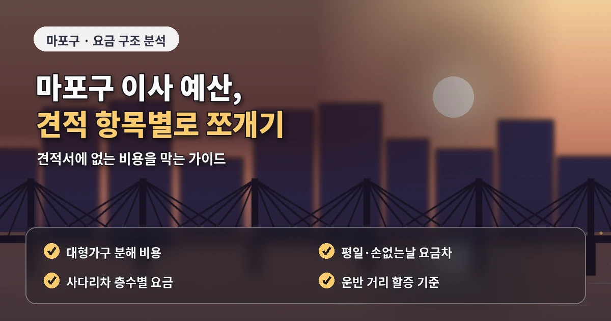

서울 마포구포장이사추천 오피스텔 견적 비교
마포구 포장이사는
오피스텔, 원룸, 아파트,
상가주택이 함께 있어
주거 형태별 견적 기준을 다르게 봐야 합니다.
공덕동은 업무지구와 주거지가 가까이 있고,
상암동은 대단지와 오피스텔 수요가 많으며,
합정동과 망원동은 원룸과 상가주택이 섞여 있습니다.
마포구 포장이사 비용은
짐의 양뿐 아니라
건물 구조와 차량 대기 조건에 따라 달라질 수 있습니다.
견적이 달라지는 현장 조건
오피스텔은 엘리베이터 예약,
지하주차장 높이 제한,
관리사무소 보양 규정이 중요합니다.
원룸과 상가주택은
차량이 건물 앞에 설 수 있는지,
계단 이동이 필요한지,
짐을 옮기는 거리가 긴지 확인해야 합니다.
특히 합정동이나 망원동처럼
유동 인구가 많고 골목이 좁은 곳은
작업 차량 대기 위치가 견적에 영향을 줄 수 있습니다.
차량이 멀리 서면
운반 거리가 길어지고
작업 시간이 늘어날 수 있습니다.

마포구 포장이사 업체추천을 찾을 때는
오피스텔 이사와 원룸 이사 경험을 확인하는 것이 좋습니다.
업체 비교 전 확인할 기준
짐이 많지 않아도
건물 규정이 까다롭거나
주차 공간이 부족하면
작업 난이도는 높아질 수 있습니다.
비용이 낮은 업체보다
포장 범위와 추가비 조건을
구체적으로 설명하는 업체가 안전합니다.
견적 상담 전에는
가져갈 짐과 버릴 짐을 나누고
대형가전과 분해가 필요한 가구를
따로 정리해두는 것이 좋습니다.
책, 의류, 주방용품,
소형가전이 많으면
예상보다 박스 수가 늘어날 수 있습니다.
마포구 포장이사 비교견적은
최소 3곳 이상 받아보는 것이 좋습니다.
다만 총액만 비교하지 말고
차량 대수,
작업 인원,
포장재 제공,
옷장 박스,
가구 보양,
바닥 보호,
사다리차 여부를 같은 기준으로 확인해야 합니다.
추가비용을 줄이는 준비 순서
상암동의 대단지 아파트는
관리사무소 예약과 엘리베이터 사용 시간이 중요합니다.
공덕동의 오피스텔은
입주민 이동이 많은 시간대를 피하고
차량 대기 위치를 미리 확인해야 합니다.
망원동과 합정동은
골목 폭과 주차 협의가 비용 차이를 만들 수 있습니다.
계약 전에는
최종 견적서에 추가비 기준이 명확히 적혀 있는지 확인해야 합니다.
장거리 운반,
계단 작업,
사다리차,
분해 조립,
특수 가전 이동 비용이
기본 견적에 포함되는지 따로 물어보는 것이 좋습니다.
마포구 포장이사는
젊은 1인가구와 가족 이사,
오피스텔 이사가 함께 있는 지역입니다.
계약 전에 남겨둘 내용
자신의 주거 형태에 맞는 기준으로
비용, 견적, 업체추천 정보를 비교해야
불필요한 비용과 일정 지연을 줄일 수 있습니다.
마포구 포장이사에서
자주 놓치는 부분은 도착지 정리 범위입니다.
포장과 운반은 포함되어 있어도
도착지에서 박스를 어느 방에 둘지,
가구 배치를 어디까지 해주는지,
주방 정리를 어느 정도까지 진행하는지는
업체마다 다를 수 있습니다.
오피스텔이나 원룸은 공간이 좁기 때문에
박스 배치가 잘못되면 정리 시간이 더 오래 걸릴 수 있습니다.
이사 전에 도착지 구조를 간단히 정리하고
큰 가구가 들어갈 위치를 정해두면
작업 시간이 줄어들 수 있습니다.
마포구는 상권과 주거지가 가까운 지역이 많아
이사 시간대 선택도 중요합니다.
출퇴근 시간이나 주말 혼잡 시간대에는
차량 대기가 쉽지 않을 수 있으므로
가능하다면 평일 오전 작업을 함께 문의하는 것이 좋습니다.
업체를 비교할 때는
가격과 함께 일정 대응 능력,
현장 설명의 구체성,
파손 보상 안내를 모두 확인하는 것이 안전합니다.
마포구는 상권과 주거지가 가까운 곳이 많아
이사 차량이 잠시 정차할 공간을 확보하는 일이 중요합니다.
합정동이나 망원동처럼 골목 상권이 발달한 지역은
주말이나 저녁 시간대에 차량 대기가 어려울 수 있습니다.
가능하다면 평일 오전처럼 비교적 한산한 시간대를 문의하는 것이 좋습니다.
오피스텔 이사의 경우에는
건물별로 이사 신청서나 보양 기준이 다를 수 있습니다.
관리사무소 확인 없이 업체만 예약하면
당일 엘리베이터 사용이 제한될 수 있으므로
예약 가능 시간과 사용 조건을 먼저 맞춰두는 것이 안전합니다.
마포구 포장이사는 짐의 양보다 건물 이용 규정이 비용에 영향을 줄 때가 있습니다.
엘리베이터 예약과 차량 정차 가능 시간을 함께 확인해야 합니다.
마포구는 상가와 주거지가 가까운 곳이 많아
이사 시간대 선택만으로도 작업 효율이 달라질 수 있습니다.
자주 묻는 질문
A. 엘리베이터 예약, 지하주차장 높이, 보양 규정, 차량 대기 위치를 확인해야 합니다.
A. 골목과 유동 인구 때문에 차량 정차 위치가 견적에 영향을 줄 수 있습니다.
A. 짐이 적어도 건물 구조가 복잡하면 사진견적이나 방문견적을 받는 것이 좋습니다.